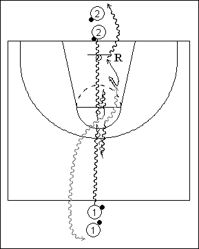

Catégorie : DRIBBLE (Dr-013)
Déroulement
- Les joueurs ont tous un ballon et sont sur deux files, une au milieu d’une baseline et l’autre dans le cercle central.
- Les premiers joueurs des deux files partent en dribble en même temps. Lorsqu’ils se rejoignent, ils effectuent des dribbles en arrière jusqu’au signal du Coach. A ce moment, ils repartent vers l’avant et lorsqu’ils sont à nouveau face à face ils changent de direction en accélérant (convenir à l’avance du côté du départ).
- Le premier joueur de la file 1 termine par un jump shoot, le rebond et le dribble vers la file 2, tandis que 2 dribble en 1.
Coaching points
- Effectuer tous les types de changements de direction (open step, cross over, derrière le dos, etc …).
- On peut également ajouter une séquence de vitesse de réaction. Par exemple, 1 décide du côté du départ vers l’anneau et 2 réagit en conséquence.